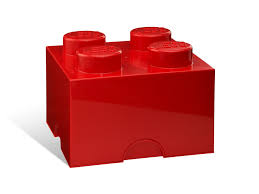

Cegły i Bloczki
Najwyższej jakości materiały ścienne zapewniające doskonałą izolację termiczną i akustyczną. Idealne rozwiązanie do budowy nowoczesnych domów jednorodzinnych oraz trwałych inwestycji komercyjnych.
| Parametr fizyczny | Wartość |
|---|---|
| Wytrzymałość na ściskanie | 15 MPa |
| Współczynnik przewodzenia ciepła (λ) | 0,18 W/(m·K) |
| Nasiąkliwość | ≤ 12% |
| Mrozoodporność | F50 (50 cykli) |
| Izolacyjność akustyczna (Rw) | 45 dB |
- verified Wysoka wytrzymałość na nacisk
- thermostat Doskonała izolacja termiczna
- ac_unit Pełna odporność na mróz i wilgoć